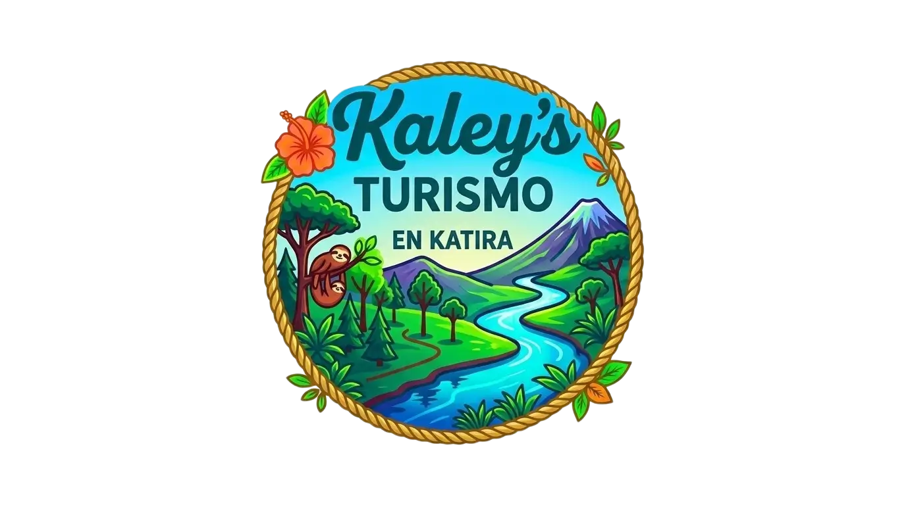
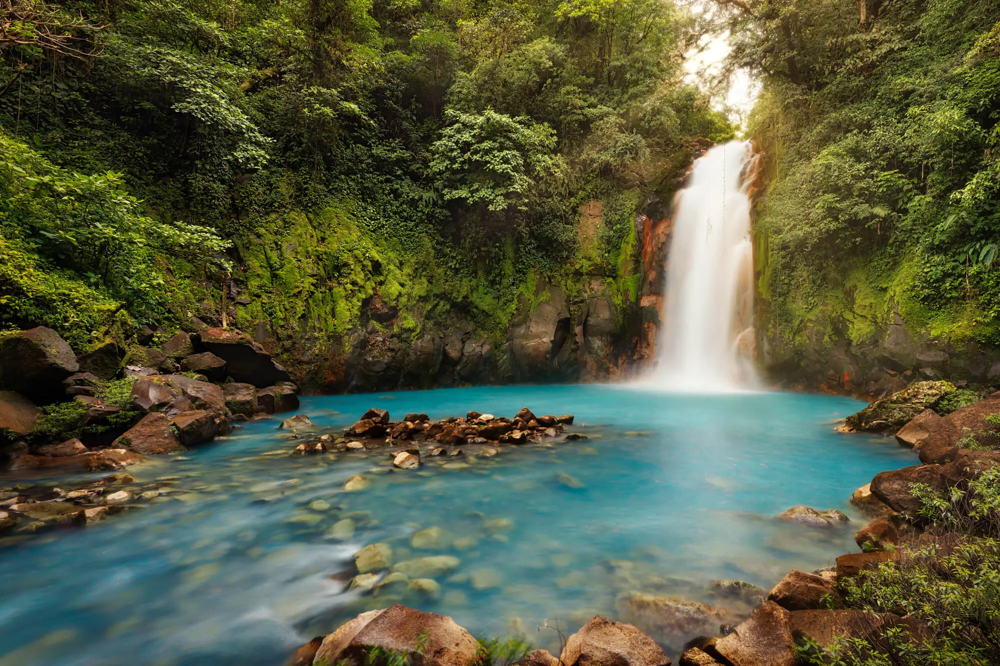
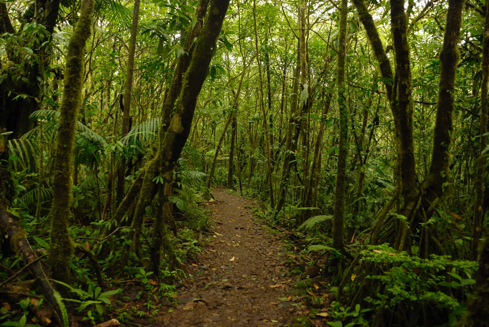

Catarata Río Celeste

La Catarata Río Celeste es uno de los lugares turísticos más visitados de Alajuela gracias a su impresionante caída de agua y coloración única.


Río Celeste es uno de los principales atractivos turísticos de Costa Rica, reconocido por sus aguas color turquesa y su cercanía con el Parque Nacional Volcán Tenorio. Este destino ofrece experiencias únicas de naturaleza, aventura y turismo rural para visitantes nacionales e internacionales.

El Parque Nacional Volcán Tenorio alberga algunos de los paisajes más espectaculares del país, incluyendo senderos, bosques tropicales, aguas termales y la famosa Catarata Río Celeste.
La Catarata Río Celeste es uno de los lugares turísticos más visitados de Alajuela gracias a su impresionante caída de agua y coloración única.
Además de Río Celeste, la provincia de Alajuela cuenta con múltiples destinos ideales para quienes buscan aventura, naturaleza y descanso.

Aquí podrás disfrutar de caminatas, observación de fauna, fotografía y experiencias de turismo ecológico.
Precio: ₡10 000 por persona.

Los tours en Río Celeste permiten explorar senderos guiados, conocer la biodiversidad local y aprender sobre la riqueza natural del ecosistema.
Precio: ₡25 000 por persona.
El turismo ecológico Costa Rica tiene en Katira uno de sus mejores ejemplos, gracias a la conservación de los recursos naturales y la participación de las comunidades locales.
Encuentra opciones de hospedaje cerca del Parque Nacional Volcán Tenorio, ideales para turismo rural, aventura y descanso en la naturaleza.
Opciones económicas rodeadas de naturaleza.

Emprendimiento turístico familiar ubicado en las faldas del Volcán Arenal. Estamos muy cerca de la mayoría de los atractivos turísticos de la zona. Contamos con una cabaña para 6 personas la cual dispone de 3 habitaciones, baño con agua caliente, sala de televisión, cocina y comedor, cochera, un rancho amplio y un jacuzzi con 8 hidromasajes. La cabaña está totalmente equipada y cuenta con servicios de internet y televisión por cable.

Cabaña Tenorio es una cabaña de madera rústica totalmente privada, rodeada de montañas, tierras de cultivo en uso y bosque tropical, ubicada en Río Celeste, a solo 10 minutos del Parque Nacional Volcán Tenorio. La cabaña tiene capacidad para hasta 7 huéspedes en 2 dormitorios, con 2 baños, cocina totalmente equipada, agua caliente, televisión y wifi. Al salir, encontrará un sendero privado hacia Río Celeste y un mirador en la cima de una colina, ambos exclusivos para nuestros huéspedes. Además, se encuentra a solo 30 minutos de la Reserva Indígena Maleku y a 1 hora de La Fortuna y del volcán Arenal.

Posada Río Celeste La Amistad, que cuenta con jardín, salón de uso común y restaurante, ofrece alojamiento en Rio Celeste con wifi gratis y vistas a la montaña. Este bed and breakfast dispone de parking privado gratis y servicio de habitaciones. El bed and breakfast cuenta con TV de pantalla plana vía satélite. Hay toallas y ropa de cama en el bed and breakfast. También hay zona de juegos infantil en el bed and breakfast. Catarata Río Celeste está a 2,7 km del alojamiento, y Volcán Miravalles está a 47 km. El aeropuerto (Aeropuerto de Fortuna) está a 71 km, y el alojamiento ofrece servicio de traslado de pago para ir o volver del aeropuerto.
Encuentra opciones de hospedaje cerca del Parque Nacional Volcán Tenorio, ideales para turismo rural, aventura y descanso en la naturaleza.

Aquí, el confort elevado se encuentra con una auténtica experiencia en el bosque tropical costarricense. Los encuentros con fauna exótica, el acceso privado a senderos naturales y la posibilidad de nadar de forma exclusiva en el río Celeste se convierten en algunos de los recuerdos más preciados de su estadía.

Los cuartos son espaciosos, elegantes y ingeniosamente distribuidos para su mayor comodidad. el Lodge fue diseñado para ofrecer a sus huéspedes tranquilidad, relajamiento y serenidad. En este ambiente pacífico, usted podrá caminar a lo largo de nuestros senderos, observar cientos de pájaros o descansar en uno de los dos jacuzzis.